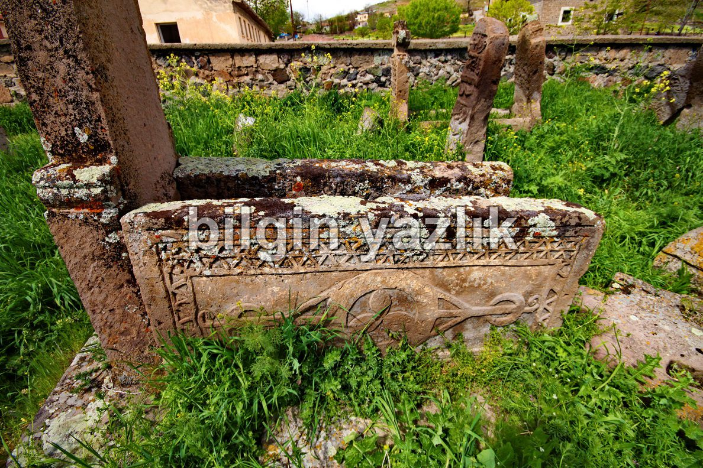
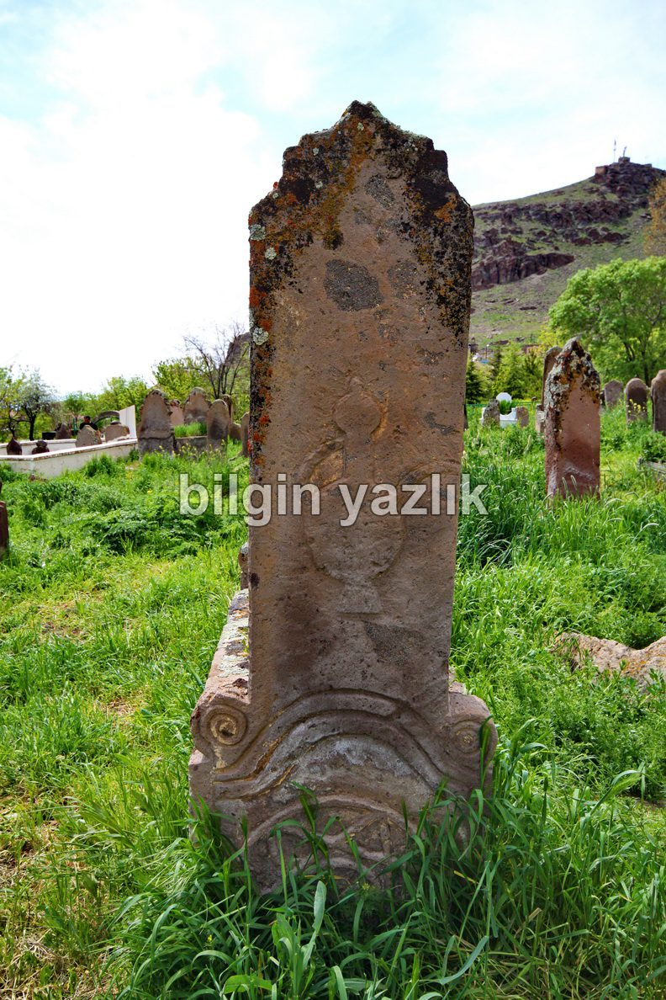
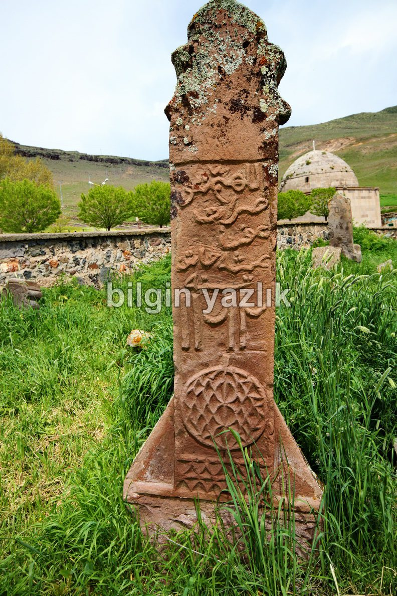

Kayseri & Koramaz · 5 Mayıs 2013
Bezemeli Mezar Taşları – Develi
Yukarı Develi’de, Dev Ali türbesinin civarında bir mezarlığın içerisinde rastladım bu mezar taşlarına. Mezarlık kapısında Ağalar Mezarlığı yazıyordu, hemen önünde de Bezemeli Mezar Taşları başlıklı bir bilgi tabelası. Anadolu’da ilk defa rastladım bu tarz mezar taşlarına. Taşların üzerinde su testisi, dairesel simgeler v.b. sanatsal işlemeler mevcut. Konu ile ilgili internette bilgi bulmak mümkün, hatta bir tez bile var : http://www.belgeler.com/blg/1yyt/kayseri-zamanti-irmai-evresindeki-bezemeli-mezar-talari-ornamental-gravestones-around-zamanti-river-in-kayseri
Develi ziyaretinizde muhakkak görmeniz gerekiyor diye düşünüyorum.



Bu yazı taliyol arşivinden taşınmıştır. · özgün kayıt